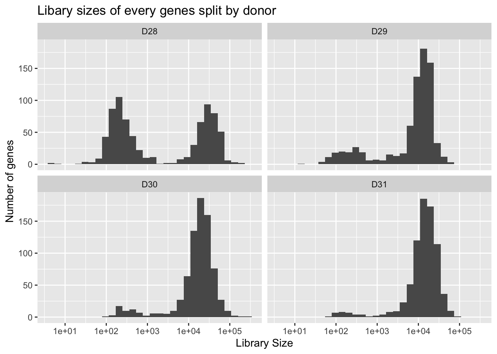
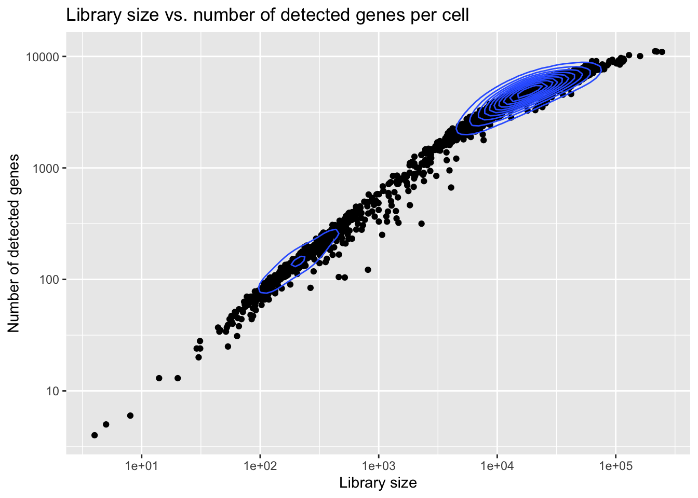
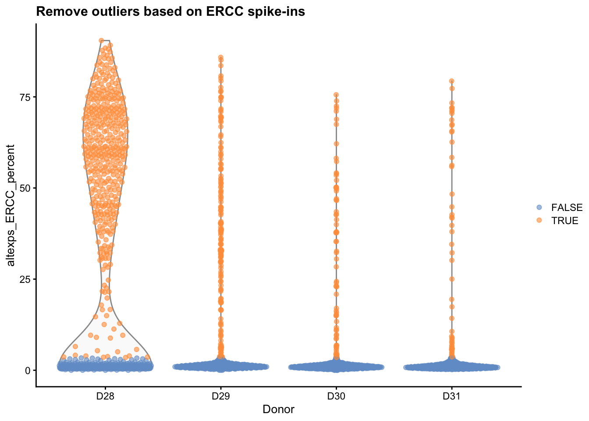
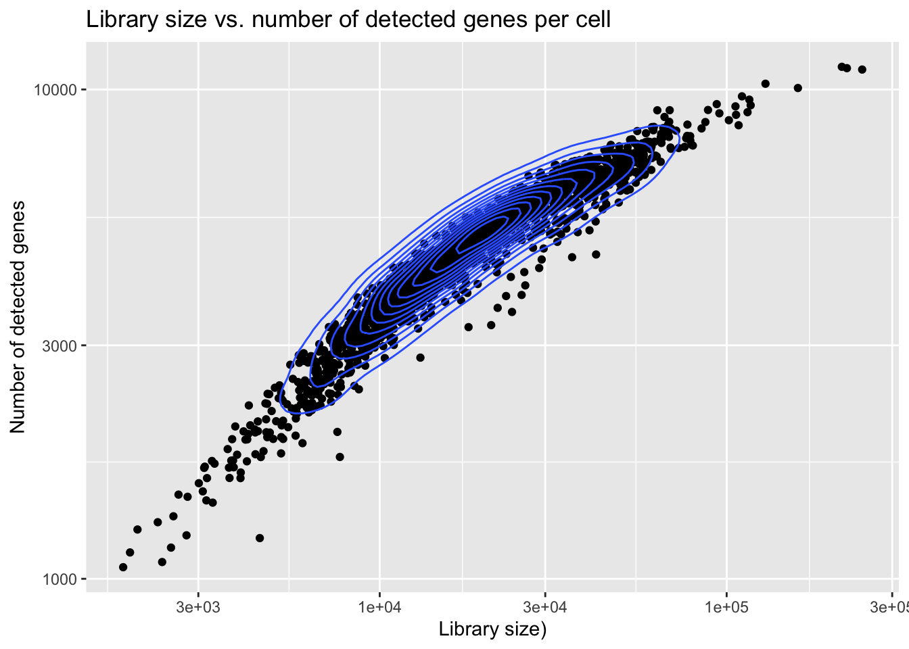
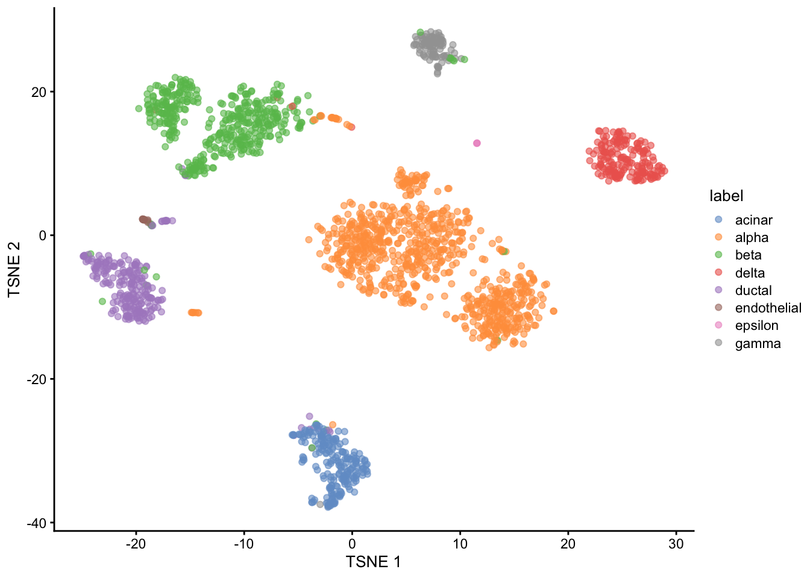

Data preparation Muraro (2016)
Last updated: 2021-01-06
Checks: 7 0
Knit directory: project-cell-type-annotation/
This reproducible R Markdown analysis was created with workflowr (version 1.6.2). The Checks tab describes the reproducibility checks that were applied when the results were created. The Past versions tab lists the development history.
Great! Since the R Markdown file has been committed to the Git repository, you know the exact version of the code that produced these results.
Great job! The global environment was empty. Objects defined in the global environment can affect the analysis in your R Markdown file in unknown ways. For reproduciblity it’s best to always run the code in an empty environment.
The command set.seed(20201203) was run prior to running the code in the R Markdown file. Setting a seed ensures that any results that rely on randomness, e.g. subsampling or permutations, are reproducible.
Great job! Recording the operating system, R version, and package versions is critical for reproducibility.
Nice! There were no cached chunks for this analysis, so you can be confident that you successfully produced the results during this run.
Great job! Using relative paths to the files within your workflowr project makes it easier to run your code on other machines.
Great! You are using Git for version control. Tracking code development and connecting the code version to the results is critical for reproducibility.
The results in this page were generated with repository version 8f3f72a. See the Past versions tab to see a history of the changes made to the R Markdown and HTML files.
Note that you need to be careful to ensure that all relevant files for the analysis have been committed to Git prior to generating the results (you can use wflow_publish or wflow_git_commit). workflowr only checks the R Markdown file, but you know if there are other scripts or data files that it depends on. Below is the status of the Git repository when the results were generated:
Ignored files:
Ignored: .DS_Store
Ignored: .Rhistory
Ignored: .Rproj.user/
Ignored: analysis/.DS_Store
Ignored: analysis/.Rhistory
Ignored: data/.DS_Store
Ignored: data/.Rapp.history
Untracked files:
Untracked: analysis/overview.Rmd
Unstaged changes:
Modified: analysis/_site.yml
Deleted: analysis/about.Rmd
Modified: data/Seurat.pred.baron.labels.rds
Modified: data/baron.labels.counts.rds
Modified: data/muraro.labels.counts.rds
Modified: data/scClassify.pred.muraro.labels.rds
Modified: data/sce_baron.RDS
Modified: data/sce_muraro.RDS
Modified: ref.bibtex
Note that any generated files, e.g. HTML, png, CSS, etc., are not included in this status report because it is ok for generated content to have uncommitted changes.
These are the previous versions of the repository in which changes were made to the R Markdown (analysis/dataprep_muraro.Rmd) and HTML (docs/dataprep_muraro.html) files. If you’ve configured a remote Git repository (see ?wflow_git_remote), click on the hyperlinks in the table below to view the files as they were in that past version.
| File | Version | Author | Date | Message |
|---|---|---|---|---|
| Rmd | 8f3f72a | stinea98 | 2021-01-06 | wflow_publish(“analysis/dataprep_muraro.Rmd”) |
| html | 2823d79 | stinea98 | 2021-01-06 | Build site. |
| Rmd | 164528f | stinea98 | 2021-01-06 | wflow_publish(files = “analysis/dataprep_muraro.Rmd”) |
| html | f519467 | stinea98 | 2021-01-03 | Build site. |
| Rmd | 05f7cba | stinea98 | 2021-01-03 | wflow_publish(all = TRUE) |
| html | ef0a2f2 | speckerf | 2021-01-03 | Build site. |
| Rmd | 0833004 | speckerf | 2021-01-03 | update and clean up data prep files |
| Rmd | 7b3b6e3 | stinea98 | 2020-12-30 | wflow_git_commit(all = TRUE) |
| html | 543a43c | stinea98 | 2020-12-30 | Build site. |
| Rmd | 42d9643 | stinea98 | 2020-12-30 | wflow_publish(all = TRUE) |
| html | 241b893 | speckerf | 2020-12-28 | Build site. |
| Rmd | 6e81080 | speckerf | 2020-12-28 | include dim red |
| html | 7566ddb | speckerf | 2020-12-28 | Build site. |
| Rmd | caf6cd2 | speckerf | 2020-12-28 | remove NA labels |
| html | 7bf452c | speckerf | 2020-12-28 | Build site. |
| Rmd | 1e613a2 | speckerf | 2020-12-28 | update dataprep |
| html | 4afcd26 | speckerf | 2020-12-16 | Build site. |
| Rmd | c1caab9 | speckerf | 2020-12-16 | wflow_git_commit(“analysis/dataprep_muraro.Rmd”) |
suppressMessages(library(scRNAseq))
suppressMessages(library(AnnotationHub))
suppressMessages(library(scater))
suppressMessages(library(scran))
suppressMessages(library(scuttle))
suppressMessages(library(scDblFinder))
suppressMessages(library(BiocParallel))
suppressMessages(library(knitr))
suppressMessages(library(kableExtra))Loading the data
We loaded the Muraro dataset directly from the scRNAseq package as a SingleCellExperiment object. The dataset contains CEL-seq scRNA-seq data from human pancreas cells from 4 different donors (Muraro et al. 2016).
[1] 16940 3072The option ensebml = TRUE ensures that the gene symbols are converted to Ensembl IDs. Any genes that could not be matched to an Ensembl ID were discarded (2110 genes). We were left with \(16940\) genes from \(3072\) different cells.
Quality Control
Quality control was performed on the loaded Baron dataset.
First we tried to identify cells with relatively high proportion of mitochondrial genes, which should be removed, as this indicates damaged nuclei, and thus low-quality cells.
Visual Inspection before QC
location <- rowRanges(sce.muraro)
isMito <- grepl("^mt-", location$originalName, ignore.case=TRUE) |
seqnames(location)=="MT" | seqnames(location)=="mt"
ifelse(any(isMito), "There has been found at least one mitochondrial gene",
"There have not been found any mitochondrial genes")[1] "There have not been found any mitochondrial genes"Suprisingly, we saw that there are no mitochondrial genes left in the dataset. We assume that the authors have removed all mitochondrial genes beforehand.
#get QC metrics:
sce.muraro <- addPerCellQC(sce.muraro)
sce.muraro <- addPerFeatureQC(sce.muraro)
qc <- as.data.frame(colData(sce.muraro))
ggplot(qc, aes(sum)) + geom_histogram() + facet_wrap(~donor) + scale_x_continuous(trans = 'log10') + ggtitle("Libary sizes of every genes split by donor") + ylab("Number of genes") + xlab("Library Size")
| Version | Author | Date |
|---|---|---|
| 2823d79 | stinea98 | 2021-01-06 |
The histograms of the library sizes show bimodal distributions, especially in donor D28. What we would like to have though, are unimodal, approximately normally distributed library sizes.

| Version | Author | Date |
|---|---|---|
| 2823d79 | stinea98 | 2021-01-06 |
As we can see from the plot, the range of library sizes as well as the range of the number of detected genes is too large.
QC
Thus, we have to perform quantitative outlier detection, in order to discard cells that have very low library size or a too low number of detected genes. Additionaly, we want to discard cells with a too high ERCC spike-in content, as this is symptomatic of loss of endogenous RNA (Amezquita et al. 2020).
reasons <- quickPerCellQC(df,
sub.fields="altexps_ERCC_percent")
discard_reasons <- as.data.frame(colSums(as.matrix(reasons)))
names(discard_reasons) <- "counts"
knitr::kable(discard_reasons) %>%
kable_styling()%>%
row_spec(4,bold=T)| counts | |
|---|---|
| low_lib_size | 611 |
| low_n_features | 669 |
| high_altexps_ERCC_percent | 696 |
| discard | 726 |
#spike-ins
sce.muraro$exclude_ERCC <- reasons$high_altexps_ERCC_percent
sce.muraro$discard <- reasons$discard
plotColData(sce.muraro, x="donor", y="altexps_ERCC_percent", colour_by = I(reasons$high_altexps_ERCC_percent)) + xlab("Donor") +
ggtitle("Remove outliers based on ERCC spike-ins")
From the table, we see that a total of \(726\) cells were excluded. Further, we see that most cells were excluded for more than one reason. In total, \(611\) cells were excluded due to low library size, \(669\) are exluded due to low number of features and \(696\) cells are excluded based on high spike-in counts.
Visual inspection after QC
# plots
qc <- as.data.frame(colData(sce.muraro))
ggplot(qc, aes(sum)) + geom_histogram() + facet_wrap(~donor) + ggtitle("Libary sizes of every genes split by donor") + scale_x_continuous(trans = "log10") + ylab("Number of genes") + xlab("log10(Library Size)")
| Version | Author | Date |
|---|---|---|
| 2823d79 | stinea98 | 2021-01-06 |
Looking at the histogram, we see that the library sizes are now reasonably distributed. Additionally, we see that most cells that have been excluded, came from donor D28.

| Version | Author | Date |
|---|---|---|
| 2823d79 | stinea98 | 2021-01-06 |
After removal of all outliers, we see that the range of library sizes, as well as the number of detected genes, is now much narrower than before.
Unifying Label Names
In order to be able to compare the two datasets by Muraro et al. (2016) and Baron et al. (2016), we need to ensure that they have the same cell type labels. Therefore we rename “duct” to “ductal and”pp" to “gamma”, similarly performed by Lin et al. (2019). Further, we remove all cells that are either labelled “unclear” or “mesenchymal”, because these label types are not present in the Baron dataset. We are left with 2022 cells, belonging to 8 different cell types.
sce.muraro$label[sce.muraro$label=="duct"] <- "ductal" #renaming
sce.muraro$label[sce.muraro$label=="pp"] <- "gamma" #renaming
sce.muraro <- sce.muraro[,!(sce.muraro$label %in% c(NA,"unclear", "mesenchymal"))] #removing
muraro.labels.counts <- as.data.frame(table(sce.muraro$label))
names(muraro.labels.counts) <- c("cell type", "frequency")
total <- data.frame("total", sum(muraro.labels.counts$frequency))
names(total) <- c("cell type", "frequency")
muraro.labels.counts <- rbind(muraro.labels.counts, total)
saveRDS(muraro.labels.counts, file="data/muraro.labels.counts.rds")
knitr::kable(muraro.labels.counts) %>%
kable_styling()%>%
row_spec(9,bold=T)| cell type | frequency |
|---|---|
| acinar | 218 |
| alpha | 803 |
| beta | 446 |
| delta | 191 |
| ductal | 242 |
| endothelial | 20 |
| epsilon | 3 |
| gamma | 99 |
| total | 2022 |
tSNE plot
Finally, we produce normalized counts and perform dimensionality reduction for visual inspection purposes.

| Version | Author | Date |
|---|---|---|
| 2823d79 | stinea98 | 2021-01-06 |
We can see that the “true” cell type labels correspond quite nicely to the clusters in the tSNE plot.
Save object
References
Amezquita, Robert A, Aaron TL Lun, Etienne Becht, Vince J Carey, Lindsay N Carpp, Ludwig Geistlinger, Federico Marini, et al. 2020. “Orchestrating Single-Cell Analysis with Bioconductor.” Nature Methods 17 (2). Nature Publishing Group: 137–45.
Baron, Maayan, Adrian Veres, Samuel L Wolock, Aubrey L Faust, Renaud Gaujoux, Amedeo Vetere, Jennifer Hyoje Ryu, et al. 2016. “A Single-Cell Transcriptomic Map of the Human and Mouse Pancreas Reveals Inter-and Intra-Cell Population Structure.” Cell Systems 3 (4). Elsevier: 346–60.
Lin, Yingxin, Yao Cao, Hani J Kim, Agus Salim, Terence P Speed, Dave Lin, Pengyi Yang, and Jean Yee Hwa Yang. 2019. “ScClassify: Hierarchical Classification of Cells.” bioRxiv. Cold Spring Harbor Laboratory, 776948.
Muraro, Mauro J, Gitanjali Dharmadhikari, Dominic Grün, Nathalie Groen, Tim Dielen, Erik Jansen, Leon van Gurp, et al. 2016. “A Single-Cell Transcriptome Atlas of the Human Pancreas.” Cell Systems 3 (4). Elsevier: 385–94.
R version 4.0.3 (2020-10-10)
Platform: x86_64-apple-darwin17.0 (64-bit)
Running under: macOS Mojave 10.14.6
Matrix products: default
BLAS: /Library/Frameworks/R.framework/Versions/4.0/Resources/lib/libRblas.dylib
LAPACK: /Library/Frameworks/R.framework/Versions/4.0/Resources/lib/libRlapack.dylib
locale:
[1] en_US.UTF-8/en_US.UTF-8/en_US.UTF-8/C/en_US.UTF-8/en_US.UTF-8
attached base packages:
[1] parallel stats4 stats graphics grDevices utils datasets
[8] methods base
other attached packages:
[1] ensembldb_2.14.0 AnnotationFilter_1.14.0
[3] GenomicFeatures_1.42.1 AnnotationDbi_1.52.0
[5] kableExtra_1.3.1 knitr_1.30
[7] BiocParallel_1.24.1 scDblFinder_1.4.0
[9] scuttle_1.0.4 scran_1.18.3
[11] scater_1.18.3 ggplot2_3.3.2
[13] AnnotationHub_2.22.0 BiocFileCache_1.14.0
[15] dbplyr_2.0.0 scRNAseq_2.4.0
[17] SingleCellExperiment_1.12.0 SummarizedExperiment_1.20.0
[19] Biobase_2.50.0 GenomicRanges_1.42.0
[21] GenomeInfoDb_1.26.2 IRanges_2.24.1
[23] S4Vectors_0.28.1 BiocGenerics_0.36.0
[25] MatrixGenerics_1.2.0 matrixStats_0.57.0
[27] workflowr_1.6.2
loaded via a namespace (and not attached):
[1] igraph_1.2.6 lazyeval_0.2.2
[3] digest_0.6.27 htmltools_0.5.0
[5] viridis_0.5.1 magrittr_2.0.1
[7] memoise_1.1.0 limma_3.46.0
[9] Biostrings_2.58.0 askpass_1.1
[11] prettyunits_1.1.1 colorspace_2.0-0
[13] blob_1.2.1 rvest_0.3.6
[15] rappdirs_0.3.1 xfun_0.19
[17] dplyr_1.0.2 crayon_1.3.4
[19] RCurl_1.98-1.2 glue_1.4.2
[21] gtable_0.3.0 zlibbioc_1.36.0
[23] XVector_0.30.0 webshot_0.5.2
[25] DelayedArray_0.16.0 BiocSingular_1.6.0
[27] scales_1.1.1 DBI_1.1.0
[29] edgeR_3.32.0 Rcpp_1.0.5
[31] isoband_0.2.3 viridisLite_0.3.0
[33] xtable_1.8-4 progress_1.2.2
[35] dqrng_0.2.1 bit_4.0.4
[37] rsvd_1.0.3 httr_1.4.2
[39] ellipsis_0.3.1 pkgconfig_2.0.3
[41] XML_3.99-0.5 farver_2.0.3
[43] locfit_1.5-9.4 tidyselect_1.1.0
[45] labeling_0.4.2 rlang_0.4.9
[47] later_1.1.0.1 munsell_0.5.0
[49] BiocVersion_3.12.0 tools_4.0.3
[51] xgboost_1.2.0.1 generics_0.1.0
[53] RSQLite_2.2.1 ExperimentHub_1.16.0
[55] evaluate_0.14 stringr_1.4.0
[57] fastmap_1.0.1 yaml_2.2.1
[59] bit64_4.0.5 fs_1.5.0
[61] purrr_0.3.4 sparseMatrixStats_1.2.0
[63] whisker_0.4 mime_0.9
[65] xml2_1.3.2 biomaRt_2.46.0
[67] compiler_4.0.3 rstudioapi_0.13
[69] beeswarm_0.2.3 curl_4.3
[71] interactiveDisplayBase_1.28.0 tibble_3.0.4
[73] statmod_1.4.35 stringi_1.5.3
[75] highr_0.8 lattice_0.20-41
[77] bluster_1.0.0 ProtGenerics_1.22.0
[79] Matrix_1.3-0 vctrs_0.3.6
[81] pillar_1.4.7 lifecycle_0.2.0
[83] BiocManager_1.30.10 BiocNeighbors_1.8.2
[85] cowplot_1.1.0 data.table_1.13.4
[87] bitops_1.0-6 irlba_2.3.3
[89] httpuv_1.5.4 rtracklayer_1.50.0
[91] R6_2.5.0 promises_1.1.1
[93] gridExtra_2.3 vipor_0.4.5
[95] MASS_7.3-53 assertthat_0.2.1
[97] openssl_1.4.3 rprojroot_2.0.2
[99] withr_2.3.0 GenomicAlignments_1.26.0
[101] Rsamtools_2.6.0 GenomeInfoDbData_1.2.4
[103] hms_0.5.3 grid_4.0.3
[105] beachmat_2.6.4 rmarkdown_2.6
[107] DelayedMatrixStats_1.12.1 Rtsne_0.15
[109] git2r_0.27.1 shiny_1.5.0
[111] ggbeeswarm_0.6.0